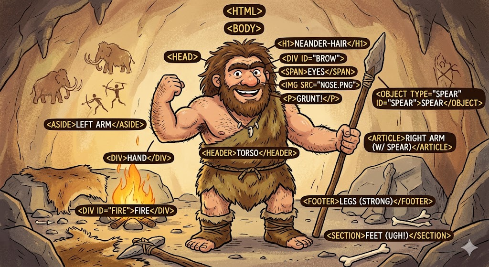

- 01. html 1.0 (1991)
- Prva neslužbena verzija. sadržavala je samo 18 tagova.
- 02. Html 2.0 (1995.)
- Prvi službeni standard (Rfc 1866).
- 03. html 3.2 (1995.)
- Uvedene tablice i apleti. "Rat preglednika" je bio u punom jeku.
- 04. html 4.01 (1999.)
- Dominantna verzija gotovo destljeće. Odvajanje stila (CSS) od sadržaja.
- 04.a 🤔XHTML (2000.)
- Jel' ovo slučajno zaboravljeno?Ili...😁
Povijest html-a
Od jednostavnog texta do modernog Weba
Sve je počelo 1989. godine u CERN-u. Tim Berners-Lee je smislio sustav koji bi istraživačima omogućio dijeljenje dokumenata.
Taj sustav postao je poznat kao World Wide Web.

Otac weba: Sir Tim Berners-Lee
Jezik koji je definirao strukturu tih dokumenata nazvan je HTML (HyperTextMarkupLanguage)
Ključne verzije
Sruktura Dokumenata
Osnovna struktura HTML5 dokumenta izgleda ovako:
<!DOCTYPE html>
<html lang="hr">
<head>
<title>Naslov</title>
</head>
<body>
<p>Pozdrav svijete</p>
</body>
</html>
Da biste spremili ovaj kod, pritisnite ctr + s na tipkovnici
primjer html-a

Važni pojmovi
- HTTPHyperText Transfer Protocol - protokol za prijenos podataka.
- URI Uniform Resource Identifier - adresa resursa na Webu.
Fiozofija Web-a
Snaga Weba je u njegovoj univerzalnosti. Pristup svima, bez obzira na invaliditet, ključni je aspekt.
-Tim Barnes-Lee
- .
- .
- .
- .
- .
Danas HTML koristimo zajedno s CSS-om i JavaScriptom
Japanski naziv za Web 網 (Mreža)